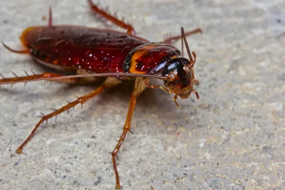

Тараканы

Происхождение слова «таракан» в русском языке точно не установлено; по мнению Рясянена, это слово происходит из чуваш. тар-ақан «убегающий»: тюрк. täz — «убегать». По предположению Якобсона, оно восходит к уничижительному употреблению тюркского tarqan или tarxan — «сановник», однако существуют и другие версии. В тюркских языках есть также слово «тарка» — расходиться.